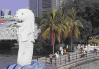
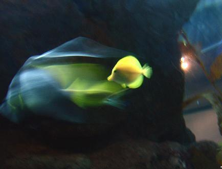
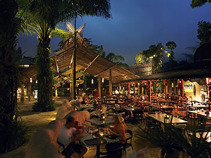
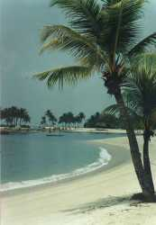
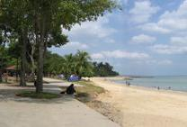

HISTORY AND ORIGINS
The Merlion was designed as an emblem for the Singapore Tourism Board (STB) in 1964. The designer was Mr Fraser Brunner, a member of the souvenir committee and a curator of the Van Kleef Aquarium.
The Merlion has a lion head and a fish body resting on a crest of waves. The lion head symbolises the legend of the rediscovery of Singapura, as recorded in the "Malay Annals". In ancient times, Singapore was known asTemasek, a Javanese word for sea.

UNDER WATER WORLD
Underwater World Singapore is one of Asia's most exciting tropical oceanarium (Large aquarium). Tourists will have the opportunity to admire the amazing sea lives from this part of the world together with endangered underwater animals. This place offers visitors the chance to look at different ocean creatures which are sure to captivate you and you do not need to dive into the water and get yourself wet. These creatures, native to Australia, have the natural camouflage of leafy and frilly appendages. This large aquarium features a long walk-through tank where you can experience sharks and rays swimming right over your head; especially liked the little sea dragons, relatives of the sea horse.
Open: Underwater World Singapore: 9.00am - 9.00 pm (last admission at 8.30 pm).
Admission: SGD 17.30 adults, SGD 11.20 child (from 3-12 years old). Admission is free for children below 3 years old. This also includes admission to the Dolphin Lagoon.
Approximate Touring Time: 1.5 hours (including Dolphin Lagoon)
Location: 80 Siloso Road, Sentosa, Singapore 098969
Tel: (65) 6275 0030
Fax: (65) 6275 0036

NIGHT SAFARI
This is the world's premier night zoo. The twilight holds many surprises ... and more so at Night Safari, where you can look a rhinocerous in the eye or hear the howls of a pack of striped hyenas. There are over 1,200 animals of over 110 exotic species to watch out for.
Open: 7.30pm to midnight (daily)
Admission: SGD 22 adults, SGD 11 children (3 - 12 years) (Note: All prices include 7% GST)

SENTOSA BEACH FOR BEACH LOVERS
Beach lovers can enjoy exciting games and sea sports along the 3.2-km long sandy beaches in Sentosa stretching across Siloso, Palawan and Tanjong You can indulge in a host of leisure activities such as cycling, in-line skating, canoeing, horse riding or simply unwind at the beach pubs. On weekends, the beach pubs will spring into action as beach volleyball fans flock to Siloso Beach for their favourite game. In recent years, Sentosa had also gained international fame for holding some of Singapore's most exciting themed events like the Sentosa Sandsation (an international sandsculpting event), Black Moon Foam Parties, Zouk Out Dance Festival and Sentosa's yearly Countdown Parties right here!

EAST COAST PARK
East Coast Park, located off the East Coast Parkway, is a favourite play area for Singaporeans, either at the beach or on its landscaped vistas and terrains where cycling is much enjoyed
Open: Daily
Admission: Free
Getting There: Take a taxi from Orchard Road, or take SBS bus 16 and alight at Marine Terrace. Then use the underpass to cross the ECP expressway.